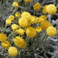

Correspondence Grimoire
Menstruation

Santolina Essential Oil🌕 Divine Feminine & the Menstrual Cycle
The words moon, month, and menstruation share ancient roots.
The Proto-Germanic menon became the Old English mona (moon).
The Latin mensis (month) gives rise to menses and menstruation.
In Old English, bleeding time was called monathblot, meaning “month blood.”
Most menstrual cycles span 28 to 29 days, aligning closely with the lunar cycle. This connection was recognized by many ancient cultures, who believed the womb was tuned to the moon.
🌑 Lunar Phases as Inner Cycle
New Moon, Menstruation
Rest, release, introspection, solitude
(Inner Winter)
Waxing Moon, Follicular Phase
Renewal, creativity, curiosity, problem solving
(Inner Spring)
Full Moon, Ovulation
Connection, confidence, radiance, celebration
(Inner Summer)
Waning Moon, Luteal Phase
Discernment, reflection, sensitivity, preparation
(Inner Autumn)
Women's Magickal Power
Women were once considered to be the more magickally potent gender, as demonstrated by their spiritual alliance with powerful natural phenomena like the moon, tides, and Earth herself.
The following were considered to demonstrate proof of women's magickal power:
- Women's ability to bring forth life from their own bodies
- Women's ability to miraculously provide food from their own bodies
- Menstruation, the monthly flow of blood that indicates the potential for fertility and the promise of life rather than death
Women were initially revered, respected, and worshipped because of this power. It is no accident that the earliest sacred images took the form of females.
No material on Earth, nothing, is traditionally considered more magickally powerful than menstrual blood; no practitioner is as powerful as a menstruating woman, with the exception of a menopausal woman. This isn't a contradiction; women weren't perceived as losing power as they aged but gaining it.
The respect, reverence, and fear of menstrual power are fairly universal and are commonly perceived by anthropologists to be extraordinarily primordial beliefs.
Magickal Properties of Menstrual Blood
Protection and Countermagic
Traditional metaphysical wisdom suggests that menstrual blood creates a solid wall of magickal protection: it can break and prevent curses, hexes, and the Evil Eye. It can counteract virtually every other power, ward or spell.
Love Magick
Consumption of as little as a single drop of a woman's menstrual blood is believed to stimulate undying love and devotion for her. Anyone who consumes a woman's menstrual blood, knowingly or unknowingly, is believed to fall forever under the command of her heart.
Sacred Offerings
Once upon a time, very long ago, many historians, scholars, and anthropologists suggest that menstrual blood provided the very first blood sacrifices: no one was killed, no one got hurt. However, only women, and women of a certain age, were capable of making these offerings. It thus offered a certain segment of the population monopoly on spiritual power.
The Power and Danger of Menstruation
However, anything so potent is also potentially dangerous. There is a theory that the real reason behind the tradition of isolating menstruating women is not because they were temporarily "unclean" but because they were temporarily too powerful and dangerous to be left unsupervised. In many traditional cultures, as in offices where women work very closely together, menstrual cycles tend to become synchronized, therefore all the women in one community might menstruate simultaneously, creating a formidable magickal army.
What else can menstrual blood magickally do? Because menstrual blood is such an intensely yin (female) power, it may counteract or deactivate yang (male) energy. It can deactivate men's amulets; it may be able to deactivate men and their magick as well. Admonitions to avoid sexual contact with menstruating women may have been initially intended to preserve male power.
Cultural Traditions
Romany Curses
In traditional Romany culture, a curse delivered by a menstruating woman, particularly if she flaps her skirts in the target's direction, is believed to be virtually irremovable.
Hawaiian Protection
In ancient Hawaii, a menstrual rag carried as a flag created an aura of protection around a party traveling through dangerous territory; it was the equivalent of a white flag of safety.
Indian Dragon Power
In India, menstruating women are traditionally discouraged from eating hot, spicy foods, which are thought to increase their "dragon power," the potent magickal influence carried by menstruation. Anyone who would rather not diminish that power may choose otherwise.
Witches and Menstrual Power
Menstruation came to embody the most shameful, sinful aspects of the female gender. However ancient legends and awareness of its power never entirely disappeared from the general population. Witches still reveled in the moonlight and gathered lunar plants like mugwort, among whose primary uses is aligning one's personal cycle with the moon.
If the witch is understood as embodying this primordial potent female power, then this is a crucial reason why she became so feared and why she is perceived as potentially dangerous and capable of being destructive. Her curses and hexes are especially potent because of her ability and willingness to access this power.
Substitutes for Menstrual Blood
Over the millennia, substitutes have evolved that echo and closely approximate that power: anyone regardless of age or gender can learn to use them, although in general they are affiliated with women's magick and power. While not as innately powerful as the real thing, they come pretty close, and in the hands of an expert practitioner they may be extremely effective. Furthermore, even those with access to true menstrual blood may not find it convenient or socially acceptable to use and so the following substitutes are very popular magick spell ingredients:
- Henna
- Iron, iron oxide powder, and ground hematite
- Vermillion powder, red ochre or red brick dust
- Red botanical material like bloodroot, dragon's blood resin or red sandalwood powder
- Dried ground scarlet flower petals like carnations, roses or poppies
- Red witch candles